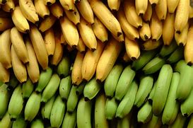
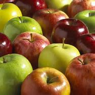
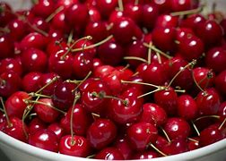

მე არ მიყვარ მწვანე და გადამწიფებული ბანანები, მაგრამ ყვითელი ბანანი ჩემი ფავორიტი ხილია
ვაშლი არის ჩემ ფავორიტ ხილებში მოერე ადგილზე და ყველაზე ძალიან მწვანე ვაშლი მიყვარს
ალუბალი არის მესამე ადგილას რადგან ჩემი აზრიტ ძალიან გემრიელია, ადვილად საჭმელია და კარგი მისით მურაბა გამოდის
